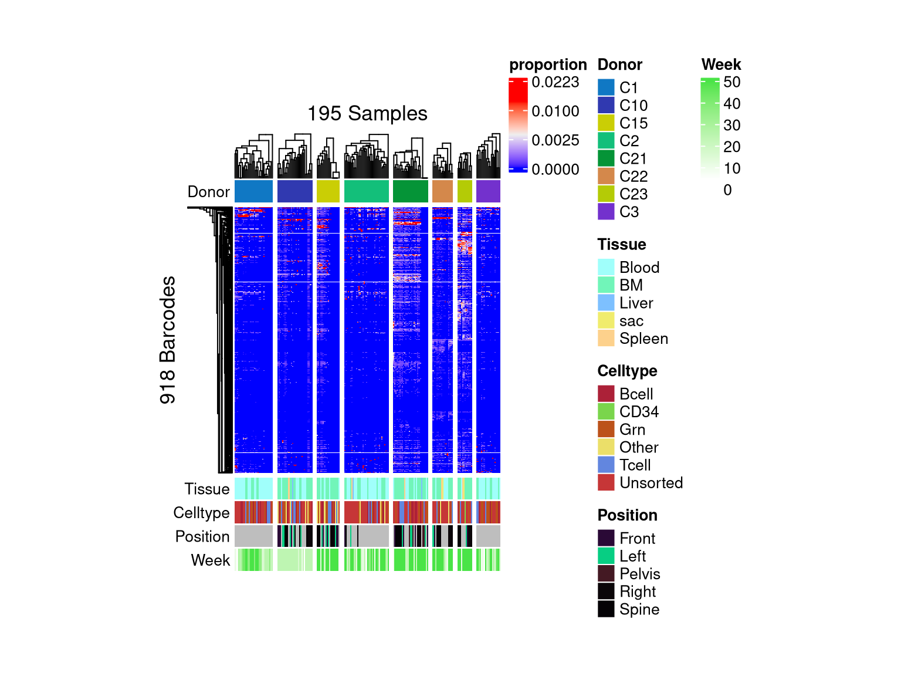
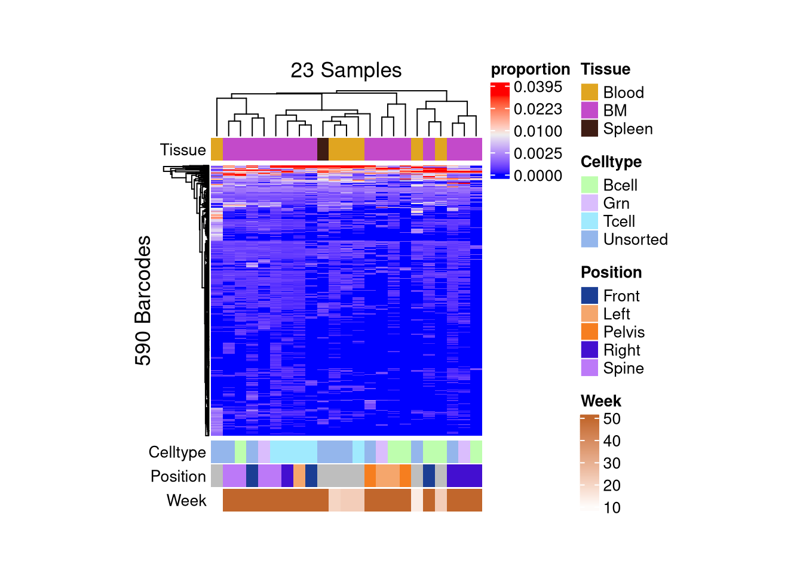
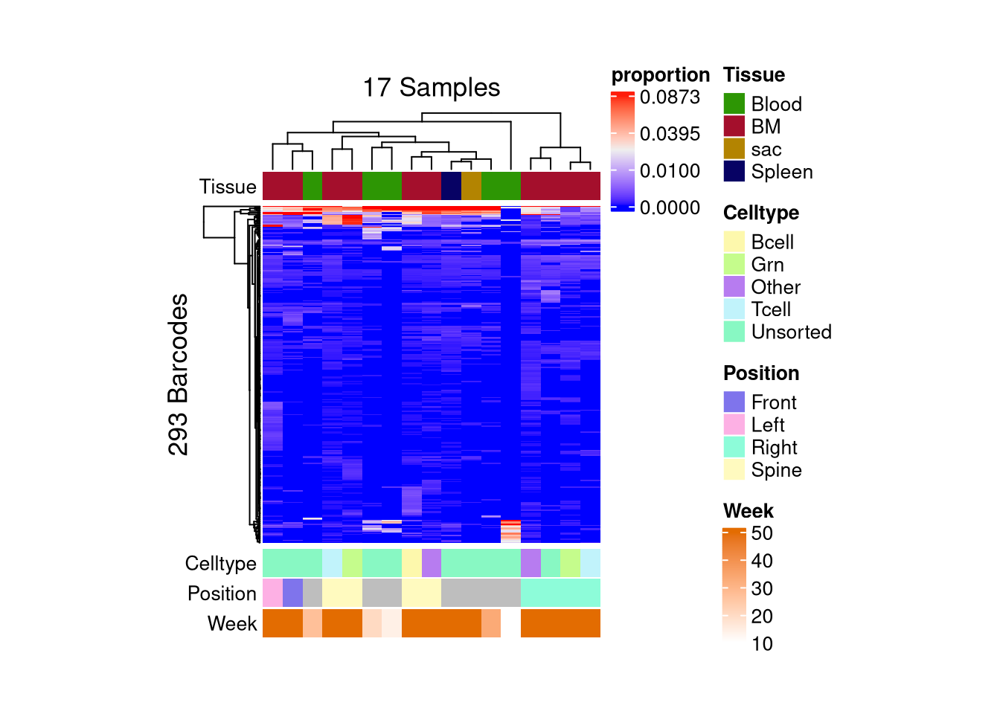
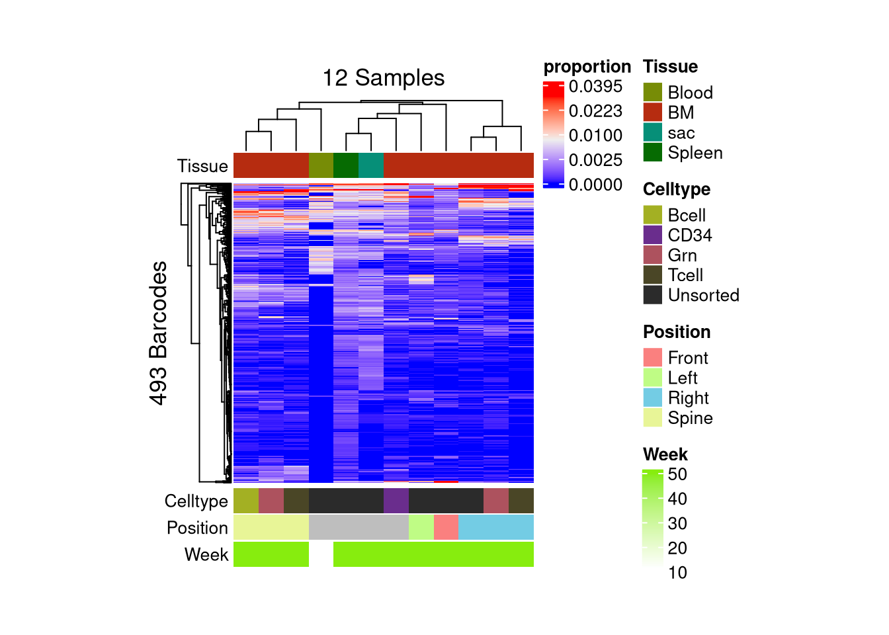

barbieQ_paper Supplementary 2: Type I error
rate using HSPC xenograft data
Liyang Fei
Initiate: 2025-04-11
Last update: 2026-06-12
Last updated: 2026-06-12
Checks: 5 2
Knit directory: public_barcode_count/
This reproducible R Markdown analysis was created with workflowr (version 1.7.2). The Checks tab describes the reproducibility checks that were applied when the results were created. The Past versions tab lists the development history.
The R Markdown file has unstaged changes. To know which version of
the R Markdown file created these results, you’ll want to first commit
it to the Git repo. If you’re still working on the analysis, you can
ignore this warning. When you’re finished, you can run
wflow_publish to commit the R Markdown file and build the
HTML.
The global environment had objects present when the code in the R
Markdown file was run. These objects can affect the analysis in your R
Markdown file in unknown ways. For reproduciblity it’s best to always
run the code in an empty environment. Use wflow_publish or
wflow_build to ensure that the code is always run in an
empty environment.
The following objects were defined in the global environment when these results were created:
| Name | Class | Size |
|---|---|---|
| module | function | 5.6 Kb |
The command set.seed(20250112) was run prior to running
the code in the R Markdown file. Setting a seed ensures that any results
that rely on randomness, e.g. subsampling or permutations, are
reproducible.
Great job! Recording the operating system, R version, and package versions is critical for reproducibility.
Nice! There were no cached chunks for this analysis, so you can be confident that you successfully produced the results during this run.
Great job! Using relative paths to the files within your workflowr project makes it easier to run your code on other machines.
Great! You are using Git for version control. Tracking code development and connecting the code version to the results is critical for reproducibility.
The results in this page were generated with repository version 6aa3ae7. See the Past versions tab to see a history of the changes made to the R Markdown and HTML files.
Note that you need to be careful to ensure that all relevant files for
the analysis have been committed to Git prior to generating the results
(you can use wflow_publish or
wflow_git_commit). workflowr only checks the R Markdown
file, but you know if there are other scripts or data files that it
depends on. Below is the status of the Git repository when the results
were generated:
Ignored files:
Ignored: .RData
Ignored: .Rhistory
Ignored: .Rproj.user/
Ignored: output/AML_barbieQ.rda
Ignored: output/mixture_barbieQ.rda
Ignored: output/mixture_negative_simulation_cpm10.rda
Ignored: output/mixture_negative_simulation_cpm5.rda
Ignored: output/monkeyHSPC_barbieQ.rda
Ignored: output/monkeyHSPC_raw_barbieQ.rda
Ignored: output/xenoHSPC_barbieQ.rda
Ignored: public_barcode_count.Rproj
Untracked files:
Untracked: analysis/figure/
Untracked: output/barbieQ_figure1.png
Unstaged changes:
Modified: README.html
Modified: README.md
Modified: analysis/barbieQ_paper_Figure2.Rmd
Modified: analysis/barbieQ_paper_Figure3.Rmd
Modified: analysis/barbieQ_paper_Figure4.Rmd
Modified: analysis/barbieQ_paper_FigureS1_AML.Rmd
Modified: analysis/barbieQ_paper_FigureS1_Mixture.Rmd
Modified: analysis/barbieQ_paper_FigureS1_xenoHSPC.Rmd
Modified: analysis/barbieQ_paper_FigureS2_AML.Rmd
Modified: analysis/barbieQ_paper_FigureS2_xenoHSPC.Rmd
Modified: analysis/index.Rmd
Deleted: output/barbieQ_figure1.drawio.png
Modified: output/f2.png
Modified: output/f3.png
Modified: output/f4.png
Modified: output/fdr_by_Nbc.rda
Modified: output/fs1_aml.png
Modified: output/fs1_mixture.png
Modified: output/fs1_xeno.png
Modified: output/fs2_aml.png
Modified: output/fs3.png
Modified: output/mixture_negative_simulation.rda
Staged changes:
New: output/AML_negative_simulation.rda
New: output/fdr_by_Nbc.rda
New: output/mixture_negative_simulation.rda
New: output/xenoC21_negative_simulation.rda
New: output/xenoC22_negative_simulation.rda
New: output/xenoC23_negative_simulation.rda
Note that any generated files, e.g. HTML, png, CSS, etc., are not included in this status report because it is ok for generated content to have uncommitted changes.
These are the previous versions of the repository in which changes were
made to the R Markdown
(analysis/barbieQ_paper_FigureS2_xenoHSPC.Rmd) and HTML
(docs/barbieQ_paper_FigureS2_xenoHSPC.html) files. If
you’ve configured a remote Git repository (see
?wflow_git_remote), click on the hyperlinks in the table
below to view the files as they were in that past version.
| File | Version | Author | Date | Message |
|---|---|---|---|---|
| Rmd | 54a5a00 | FeiLiyang | 2026-01-07 | supple analyses |
| html | 54a5a00 | FeiLiyang | 2026-01-07 | supple analyses |
Links to Type I error rate assessment using other datasets in the barbieQ paper:
1 Load Dependencies
library(readxl)
library(magrittr)
library(dplyr)
library(tidyr) # for pivot_longer
library(tibble) # for rownames_to _column
library(knitr) # for kable()
library(ggplot2)
library(patchwork)
library(scales)
library(ggVennDiagram)
library(ComplexHeatmap)
library(limma)
library(edgeR)
library(SummarizedExperiment)
library(SEtools)
library(S4Vectors)
library(devtools)
# devtools::install_github("DaneVass/bartools", dependencies = TRUE, force = TRUE)
# library(bartools)
source("analysis/plotBarcodeHistogram.R") ## accommodated from bartools::plotBarcodehistogram
source("analysis/F3_simulation.R") ## for negative simulation
source("analysis/ggplot_theme.R") ## setting ggplot theme2 Install
barbieQ
Installing the latest devel version of barbieQ from
GitHub.
if (!requireNamespace("barbieQ", quietly = TRUE)) {
remotes::install_github("Oshlack/barbieQ")
}Warning: replacing previous import 'data.table::first' by 'dplyr::first' when
loading 'barbieQ'Warning: replacing previous import 'data.table::between' by 'dplyr::between'
when loading 'barbieQ'Warning: replacing previous import 'data.table::last' by 'dplyr::last' when
loading 'barbieQ'Warning: replacing previous import 'dplyr::as_data_frame' by
'igraph::as_data_frame' when loading 'barbieQ'Warning: replacing previous import 'dplyr::groups' by 'igraph::groups' when
loading 'barbieQ'Warning: replacing previous import 'dplyr::union' by 'igraph::union' when
loading 'barbieQ'Registered S3 method overwritten by 'formula.tools':
method from
as.character.formula openxlsxlibrary(barbieQ)Check the version of barbieQ.
packageVersion("barbieQ")[1] '1.5.4'3 Set seeds
set.seed(2025)4 Load preprocessed data
Links to HSPC xenograft data preprocessing
load("output/xenoHSPC_barbieQ.rda")5 Samples level QC
5.1 PCA
“library” samples and “time0” samples differ from recipient samples.
pca_results <- (assays(xenoHSPC_top)$proportion) %>% sqrt() %>% asin() %>%
t() %>%
prcomp( scale. = TRUE)
var_pct <- pca_results$sdev^2 / sum(pca_results$sdev^2) * 100
var_pct [1] 1.673472e+01 9.449378e+00 5.643660e+00 5.174831e+00 2.767210e+00
[6] 2.576622e+00 2.229979e+00 1.884169e+00 1.620489e+00 1.501799e+00
[11] 1.405215e+00 1.337911e+00 1.233879e+00 1.173340e+00 1.136801e+00
[16] 1.060319e+00 1.027356e+00 1.009341e+00 9.409308e-01 9.299162e-01
[21] 8.829134e-01 8.358819e-01 7.953846e-01 7.484856e-01 7.164036e-01
[26] 7.118961e-01 7.057700e-01 6.561875e-01 6.295169e-01 6.261068e-01
[31] 6.154881e-01 6.012391e-01 5.973716e-01 5.802232e-01 5.761825e-01
[36] 5.652231e-01 5.475790e-01 5.466940e-01 5.391431e-01 5.253487e-01
[41] 5.200450e-01 5.071721e-01 5.041168e-01 4.998970e-01 4.859487e-01
[46] 4.755708e-01 4.657337e-01 4.565075e-01 4.524140e-01 4.457249e-01
[51] 4.381417e-01 4.285282e-01 4.236772e-01 4.141519e-01 4.114354e-01
[56] 4.013761e-01 3.925548e-01 3.897378e-01 3.838273e-01 3.734571e-01
[61] 3.643586e-01 3.609219e-01 3.513618e-01 3.493754e-01 3.473751e-01
[66] 3.339100e-01 3.300894e-01 3.229913e-01 3.211806e-01 3.126226e-01
[71] 3.075182e-01 3.024934e-01 3.012490e-01 2.952735e-01 2.908955e-01
[76] 2.830301e-01 2.785298e-01 2.760561e-01 2.711758e-01 2.677341e-01
[81] 2.608393e-01 2.575148e-01 2.549283e-01 2.480486e-01 2.425328e-01
[86] 2.404941e-01 2.367816e-01 2.317224e-01 2.276698e-01 2.258269e-01
[91] 2.240805e-01 2.172764e-01 2.156079e-01 2.132558e-01 2.046226e-01
[96] 2.024676e-01 1.988295e-01 1.940078e-01 1.902020e-01 1.874167e-01
[101] 1.851496e-01 1.814007e-01 1.768315e-01 1.758461e-01 1.716682e-01
[106] 1.678890e-01 1.667009e-01 1.569901e-01 1.568721e-01 1.562068e-01
[111] 1.521822e-01 1.476811e-01 1.465953e-01 1.462261e-01 1.409973e-01
[116] 1.394036e-01 1.366029e-01 1.337264e-01 1.321260e-01 1.305145e-01
[121] 1.249595e-01 1.219075e-01 1.214562e-01 1.192255e-01 1.171134e-01
[126] 1.160705e-01 1.149845e-01 1.101500e-01 1.084513e-01 1.071608e-01
[131] 1.053531e-01 1.044931e-01 9.909064e-02 9.774744e-02 9.407976e-02
[136] 9.050756e-02 8.603238e-02 8.427798e-02 8.271749e-02 8.008922e-02
[141] 7.548010e-02 7.336617e-02 7.207667e-02 7.096954e-02 6.946199e-02
[146] 6.731243e-02 6.295175e-02 6.032776e-02 5.559617e-02 5.289016e-02
[151] 5.172823e-02 4.911386e-02 4.712306e-02 4.478460e-02 4.381994e-02
[156] 4.206303e-02 3.834513e-02 3.701540e-02 3.633331e-02 3.270825e-02
[161] 2.980189e-02 2.913121e-02 2.707072e-02 2.467756e-02 2.324433e-02
[166] 2.004474e-02 1.811865e-02 1.760977e-02 1.744382e-02 1.568872e-02
[171] 1.488070e-02 1.245837e-02 1.009196e-02 5.726546e-03 4.849909e-03
[176] 3.426821e-03 8.236424e-04 6.158245e-04 9.062207e-05 6.789099e-05
[181] 2.834347e-12 3.300342e-30 1.512784e-31 1.512784e-31 1.512784e-31
[186] 1.512784e-31 1.512784e-31 1.512784e-31 1.512784e-31 1.512784e-31
[191] 1.512784e-31 1.512784e-31 1.512784e-31 1.512784e-31 1.512784e-31
[196] 1.512784e-31 1.512784e-31 1.512784e-31 1.512784e-31pca_df <- data.frame(
PC1 = pca_results$x[, 1],
PC2 = pca_results$x[, 2],
xenoHSPC_top$sampleMetadata
)
ggplot(pca_df, aes(x = PC1, y = PC2, color = Tissue)) +
geom_point(size = 3) +
labs(title = "PCA on asin-sqrt prop.",
x = paste0("PC1 (", round(var_pct[1], 2), " %)"),
y = paste0("PC2 (", round(var_pct[2], 2), " %)")) +
theme_classic() +
theme(aspect.ratio = 1)
| Version | Author | Date |
|---|---|---|
| 54a5a00 | FeiLiyang | 2026-01-07 |
Delete “library” and “time0” samples in subsequent analysis.
xenoHSPC_recipient <- xenoHSPC_top[,!xenoHSPC_top$sampleMetadata$Tissue %in% c("library", "time0")]
dim(xenoHSPC_recipient)[1] 918 195xenoHSPC_recipient$sampleMetadata$Time <- factor(
xenoHSPC_recipient$sampleMetadata$Time,
levels = c("wk4", "wk6", "wk7", "wk9", "wk10", "wk11", "wk12", "wk14", "wk16", "wk18", "wk19", "wk20", "wk22", "wk24", "wk25", "wk27", "wk30", "wk33", "wk36", "wk37", "wk42", "wk43", "wk47", "sac")
)
wk <- gsub("wk(\\d+)", "\\1", xenoHSPC_recipient$sampleMetadata$Time)
wk <- gsub("sac", 50, wk) ## assign "sac" pseudotime by wk50
wk <- as.numeric(wk)
xenoHSPC_recipient$sampleMetadata$Week <- wkpca_results <- (assays(xenoHSPC_recipient)$proportion) %>% sqrt() %>% asin() %>%
t() %>%
prcomp()
var_pct <- pca_results$sdev^2 / sum(pca_results$sdev^2) * 100
var_pct [1] 1.479344e+01 8.330950e+00 6.287068e+00 6.226407e+00 5.363892e+00
[6] 3.627028e+00 3.516160e+00 2.999774e+00 2.576212e+00 2.472176e+00
[11] 2.120177e+00 2.056426e+00 1.752749e+00 1.626683e+00 1.583405e+00
[16] 1.389448e+00 1.309808e+00 1.239237e+00 1.195308e+00 1.138141e+00
[21] 1.078400e+00 1.013503e+00 9.053166e-01 8.702622e-01 8.214881e-01
[26] 7.857411e-01 7.380047e-01 7.305955e-01 6.878795e-01 6.546646e-01
[31] 6.074811e-01 5.935607e-01 5.740091e-01 5.513828e-01 5.301982e-01
[36] 5.238409e-01 4.942603e-01 4.759932e-01 4.704834e-01 4.407335e-01
[41] 4.333084e-01 4.196285e-01 4.009567e-01 3.861837e-01 3.748521e-01
[46] 3.662801e-01 3.563715e-01 3.538795e-01 3.400533e-01 3.348882e-01
[51] 3.207669e-01 3.113955e-01 3.031560e-01 3.011724e-01 2.953236e-01
[56] 2.853936e-01 2.838217e-01 2.781898e-01 2.663242e-01 2.634376e-01
[61] 2.406982e-01 2.397068e-01 2.272339e-01 2.198978e-01 2.192189e-01
[66] 2.116993e-01 2.096951e-01 2.072526e-01 2.004909e-01 1.962941e-01
[71] 1.911299e-01 1.861753e-01 1.810991e-01 1.723564e-01 1.701480e-01
[76] 1.666642e-01 1.633386e-01 1.603920e-01 1.554791e-01 1.498141e-01
[81] 1.453292e-01 1.406303e-01 1.380385e-01 1.348607e-01 1.313640e-01
[86] 1.274998e-01 1.235760e-01 1.152278e-01 1.125916e-01 1.107482e-01
[91] 1.079313e-01 1.058588e-01 1.016958e-01 9.807702e-02 9.558881e-02
[96] 9.468148e-02 8.727559e-02 8.512717e-02 8.173793e-02 7.951066e-02
[101] 7.637967e-02 7.594063e-02 7.395949e-02 7.156617e-02 6.879921e-02
[106] 6.733569e-02 6.555393e-02 6.371865e-02 6.258242e-02 5.944996e-02
[111] 5.807566e-02 5.637390e-02 5.401405e-02 5.351594e-02 5.093370e-02
[116] 5.018407e-02 4.909521e-02 4.776852e-02 4.548049e-02 4.482061e-02
[121] 4.214630e-02 3.968405e-02 3.874588e-02 3.808117e-02 3.697447e-02
[126] 3.514576e-02 3.307821e-02 3.077555e-02 3.044347e-02 2.948776e-02
[131] 2.797135e-02 2.769691e-02 2.727003e-02 2.514839e-02 2.397377e-02
[136] 2.310491e-02 2.167158e-02 2.044579e-02 2.010012e-02 1.930558e-02
[141] 1.880420e-02 1.765411e-02 1.740390e-02 1.628787e-02 1.555388e-02
[146] 1.429623e-02 1.393612e-02 1.358735e-02 1.292522e-02 1.247998e-02
[151] 1.205023e-02 1.130288e-02 1.075463e-02 9.735549e-03 9.145263e-03
[156] 8.264110e-03 7.646805e-03 7.306899e-03 7.083384e-03 6.556232e-03
[161] 5.688634e-03 5.128788e-03 4.964275e-03 4.483613e-03 4.406028e-03
[166] 4.068626e-03 3.848206e-03 3.759551e-03 3.543005e-03 3.363469e-03
[171] 3.178208e-03 2.908354e-03 2.644241e-03 2.264792e-03 1.681031e-03
[176] 4.620949e-04 2.020341e-04 2.687296e-05 2.680569e-12 2.917491e-30
[181] 7.343497e-31 8.729848e-32 8.729848e-32 8.729848e-32 8.729848e-32
[186] 8.729848e-32 8.729848e-32 8.729848e-32 8.729848e-32 8.729848e-32
[191] 8.729848e-32 8.729848e-32 8.729848e-32 8.729848e-32 4.864035e-32pca_df <- data.frame(
PC1 = pca_results$x[, 1],
PC2 = pca_results$x[, 2],
xenoHSPC_recipient$sampleMetadata
)ggplot PCA
ggplot(pca_df, aes(x = PC1, y = PC2, color = Donor)) +
geom_point(size = 3) +
labs(title = "PCA on asin-sqrt prop.",
x = paste0("PC1 (", round(var_pct[1], 2), " %)"),
y = paste0("PC2 (", round(var_pct[2], 2), " %)")) +
theme_classic() +
theme(aspect.ratio = 1)
| Version | Author | Date |
|---|---|---|
| 54a5a00 | FeiLiyang | 2026-01-07 |
ggplot(pca_df, aes(x = PC1, y = PC2, color = Week)) +
geom_point(size = 3) +
labs(title = "PCA on asin-sqrt prop.",
x = paste0("PC1 (", round(var_pct[1], 2), " %)"),
y = paste0("PC2 (", round(var_pct[2], 2), " %)")) +
theme_classic() +
theme(aspect.ratio = 1)
| Version | Author | Date |
|---|---|---|
| 54a5a00 | FeiLiyang | 2026-01-07 |
ggplot(pca_df, aes(x = PC1, y = PC2, color = Tissue)) +
geom_point(size = 3) +
labs(title = "PCA on asin-sqrt prop.",
x = paste0("PC1 (", round(var_pct[1], 2), " %)"),
y = paste0("PC2 (", round(var_pct[2], 2), " %)")) +
theme_classic() +
theme(aspect.ratio = 1)
| Version | Author | Date |
|---|---|---|
| 54a5a00 | FeiLiyang | 2026-01-07 |
ggplot(pca_df, aes(x = PC1, y = PC2, color = Week)) +
geom_point(size = 3) +
labs(title = "PCA on asin-sqrt prop.",
x = paste0("PC1 (", round(var_pct[1], 2), " %)"),
y = paste0("PC2 (", round(var_pct[2], 2), " %)")) +
theme_linedraw() +
facet_grid(Donor~Celltype)
| Version | Author | Date |
|---|---|---|
| 54a5a00 | FeiLiyang | 2026-01-07 |
5.2 Plot propportion
## order samples
order_sample <- xenoHSPC_recipient$sampleMetadata %>% with(order(Donor, Tissue, Celltype, Time))
## assign unique names to samples
ps.counts <- assay(xenoHSPC_recipient)
colnames(ps.counts) <- make.unique(xenoHSPC_recipient$sampleMetadata$Donor)
## create bartools object
Donor_dge <- DGEList(
counts = ps.counts,
group = xenoHSPC_recipient$sampleMetadata$Donor)
## plot
plotBarcodeHistogram(Donor_dge, orderSamples = colnames(ps.counts)[order_sample])Warning: Use of .data in tidyselect expressions was deprecated in tidyselect 1.2.0.
ℹ Please use `"barcode"` instead of `.data$barcode`
This warning is displayed once per session.
Call `lifecycle::last_lifecycle_warnings()` to see where this warning was
generated.Warning: Use of .data in tidyselect expressions was deprecated in tidyselect 1.2.0.
ℹ Please use `"value"` instead of `.data$value`
This warning is displayed once per session.
Call `lifecycle::last_lifecycle_warnings()` to see where this warning was
generated.Warning: Use of .data in tidyselect expressions was deprecated in tidyselect 1.2.0.
ℹ Please use `"name"` instead of `.data$name`
This warning is displayed once per session.
Call `lifecycle::last_lifecycle_warnings()` to see where this warning was
generated.Warning: Use of .data in tidyselect expressions was deprecated in tidyselect 1.2.0.
ℹ Please use `"freq"` instead of `.data$freq`
This warning is displayed once per session.
Call `lifecycle::last_lifecycle_warnings()` to see where this warning was
generated.Warning: The `guide` argument in `scale_*()` cannot be `FALSE`. This was deprecated in
ggplot2 3.3.4.
ℹ Please use "none" instead.
This warning is displayed once per session.
Call `lifecycle::last_lifecycle_warnings()` to see where this warning was
generated.
| Version | Author | Date |
|---|---|---|
| 54a5a00 | FeiLiyang | 2026-01-07 |
5.3 Heatmap
barbieQ::plotBarcodeHeatmap(
xenoHSPC_recipient, sampleMetadata = xenoHSPC_recipient$sampleMetadata[,c(2,5,6,7,8)], splitSamples = T, sampleGroup = "Donor")setting Donor as the primary factor in `sampleMetadata`.The automatically generated colors map from the 1^st and 99^th of the
values in the matrix. There are outliers in the matrix whose patterns
might be hidden by this color mapping. You can manually set the color
to `col` argument.
Use `suppressMessages()` to turn off this message.Following `at` are removed: NA, because no color was defined for them.
Following `at` are removed: NA, because no color was defined for them.
Following `at` are removed: NA, because no color was defined for them.The automatically generated colors map from the 1^st and 99^th of the
values in the matrix. There are outliers in the matrix whose patterns
might be hidden by this color mapping. You can manually set the color
to `col` argument.
Use `suppressMessages()` to turn off this message.
| Version | Author | Date |
|---|---|---|
| 54a5a00 | FeiLiyang | 2026-01-07 |
matrix color is mapped to `asin-sqrt proportion` but labeled by raw proportion.Following `at` are removed: NA, because no color was defined for them.
Following `at` are removed: NA, because no color was defined for them.
Following `at` are removed: NA, because no color was defined for them.
| Version | Author | Date |
|---|---|---|
| 54a5a00 | FeiLiyang | 2026-01-07 |
6 Subset samples of indivisual donors
QC samples
6.1 Donor C21
## subet C21 Donor samples
C21 <- xenoHSPC_recipient[, xenoHSPC_recipient$sampleMetadata$Donor == "C21"]
## flag C21 samples of extremely low libsize
colSums(assay(C21)) %>% sort() BMPelvis_T Liver BMFront_G...169 BMPelvis_G
2 2 4 4
BMLeft_unsorted wk22_G BMPelvis_B BMRight_B...175
5 10 3081 3183
BMLeft_G...173 BMPelvis_unsorted Spleen...186 BMFront_T...168
4605 6645 6866 8667
wk22_B wk14...160 wk22_unsorted BMSpine_unsorted
9253 10201 10237 15348
wk22_T BMSpine_G...181 BMLeft_B...171 BMRight_G...177
15382 18122 19473 21358
wk9 BMSpine_B...179 BMFront_B...167 wk20...161
21773 22775 32820 38310
BMRight_T BMSpine_T...180 BMRight_unsorted BMFront_unsorted
42697 51396 62162 62409
BMLeft_T...172
79018 flag_low_C21 <- colSums(assay(C21)) < 100
## remove the low libsize samples
C21 <- C21[, !flag_low_C21]
colSums(assay(C21)) %>% sort() BMPelvis_B BMRight_B...175 BMLeft_G...173 BMPelvis_unsorted
3081 3183 4605 6645
Spleen...186 BMFront_T...168 wk22_B wk14...160
6866 8667 9253 10201
wk22_unsorted BMSpine_unsorted wk22_T BMSpine_G...181
10237 15348 15382 18122
BMLeft_B...171 BMRight_G...177 wk9 BMSpine_B...179
19473 21358 21773 22775
BMFront_B...167 wk20...161 BMRight_T BMSpine_T...180
32820 38310 42697 51396
BMRight_unsorted BMFront_unsorted BMLeft_T...172
62162 62409 79018 ## tag top barcodes within C21
C21$sampleMetadata %>% with(paste(Donor, Tissue, Celltype, Time)) %>% table().
C21 Blood Bcell wk22 C21 Blood Tcell wk22 C21 Blood Unsorted wk14
1 1 1
C21 Blood Unsorted wk20 C21 Blood Unsorted wk22 C21 Blood Unsorted wk9
1 1 1
C21 BM Bcell sac C21 BM Grn sac C21 BM Tcell sac
5 3 4
C21 BM Unsorted sac C21 Spleen Unsorted sac
4 1 C21 <- tagTopBarcodes(C21, nSampleThreshold = 1)
plotBarcodePareto(C21)Warning: Removed 10 rows containing missing values or values outside the scale range
(`geom_bar()`).
| Version | Author | Date |
|---|---|---|
| 54a5a00 | FeiLiyang | 2026-01-07 |
plotBarcodeSankey(C21)
| Version | Author | Date |
|---|---|---|
| 54a5a00 | FeiLiyang | 2026-01-07 |
## filter top barcodes
C21 <- C21[C21@elementMetadata$isTopBarcode$isTop,]
barbieQ::plotBarcodeHeatmap(C21, sampleMetadata = C21$sampleMetadata[,c(5,6,7,8)])setting Tissue as the primary factor in `sampleMetadata`.The automatically generated colors map from the 1^st and 99^th of the
values in the matrix. There are outliers in the matrix whose patterns
might be hidden by this color mapping. You can manually set the color
to `col` argument.
Use `suppressMessages()` to turn off this message.Following `at` are removed: NA, because no color was defined for them.
Following `at` are removed: NA, because no color was defined for them.
Following `at` are removed: NA, because no color was defined for them.The automatically generated colors map from the 1^st and 99^th of the
values in the matrix. There are outliers in the matrix whose patterns
might be hidden by this color mapping. You can manually set the color
to `col` argument.
Use `suppressMessages()` to turn off this message.
| Version | Author | Date |
|---|---|---|
| 54a5a00 | FeiLiyang | 2026-01-07 |
matrix color is mapped to `asin-sqrt proportion` but labeled by raw proportion.Following `at` are removed: NA, because no color was defined for them.
Following `at` are removed: NA, because no color was defined for them.
Following `at` are removed: NA, because no color was defined for them.
| Version | Author | Date |
|---|---|---|
| 54a5a00 | FeiLiyang | 2026-01-07 |
- PCA
pca_results <- (assays(C21)$proportion) %>% sqrt() %>% asin() %>%
t() %>%
prcomp()
var_pct <- pca_results$sdev^2 / sum(pca_results$sdev^2) * 100
var_pct [1] 2.838868e+01 1.945461e+01 1.604830e+01 9.087066e+00 7.553164e+00
[6] 4.218560e+00 3.457480e+00 2.044943e+00 1.719414e+00 1.537810e+00
[11] 1.094493e+00 9.574606e-01 8.023795e-01 7.000405e-01 6.082241e-01
[16] 5.635789e-01 4.785449e-01 4.352631e-01 3.336410e-01 2.606871e-01
[21] 1.578211e-01 9.782896e-02 5.183290e-31pca_df <- data.frame(
PC1 = pca_results$x[, 1],
PC2 = pca_results$x[, 2],
C21$sampleMetadata
)
ggplot(pca_df, aes(x = PC1, y = PC2, color = Week)) +
geom_point(size = 3) +
labs(title = "PCA on asin-sqrt prop.",
x = paste0("PC1 (", round(var_pct[1], 2), " %)"),
y = paste0("PC2 (", round(var_pct[2], 2), " %)")) +
theme_classic() +
theme(aspect.ratio = 1)
| Version | Author | Date |
|---|---|---|
| 54a5a00 | FeiLiyang | 2026-01-07 |
ggplot(pca_df, aes(x = PC1, y = PC2, color = Tissue)) +
geom_point(size = 3) +
labs(title = "PCA on asin-sqrt prop.",
x = paste0("PC1 (", round(var_pct[1], 2), " %)"),
y = paste0("PC2 (", round(var_pct[2], 2), " %)")) +
theme_classic() +
theme(aspect.ratio = 1)
| Version | Author | Date |
|---|---|---|
| 54a5a00 | FeiLiyang | 2026-01-07 |
ggplot(pca_df, aes(x = PC1, y = PC2, color = Celltype)) +
geom_point(size = 3) +
labs(title = "PCA on asin-sqrt prop.",
x = paste0("PC1 (", round(var_pct[1], 2), " %)"),
y = paste0("PC2 (", round(var_pct[2], 2), " %)")) +
theme_classic() +
theme(aspect.ratio = 1)
| Version | Author | Date |
|---|---|---|
| 54a5a00 | FeiLiyang | 2026-01-07 |
6.2 Donor C22
## subet C21 Donor samples
C22 <- xenoHSPC_recipient[, xenoHSPC_recipient$sampleMetadata$Donor == "C22"]
## flag C22 samples of extremely low libsize
colSums(assay(C22)) %>% sort() wk14...143 wk10 wk27
4715 7160 14534
BM_Right_T...151 BM_Right_unsorted...150 sac
16079 16980 23283
wk33 BM_Front wk20...144
26871 29741 41579
BM_Right_G...152 BM_Left BM_Spine_O
44421 67066 93833
Spleen...158 BM_Right_O BM_Spine_B...154
104606 116938 124739
BM_Spine_T...155 BM_Spine_G...156
140737 258357 ## tag top barcodes within C22
C22$sampleMetadata %>% with(paste(Donor, Tissue, Celltype, Time)) %>% table().
C22 Blood Unsorted wk10 C22 Blood Unsorted wk14 C22 Blood Unsorted wk20
1 1 1
C22 Blood Unsorted wk27 C22 Blood Unsorted wk33 C22 BM Bcell sac
1 1 1
C22 BM Grn sac C22 BM Other sac C22 BM Tcell sac
2 2 2
C22 BM Unsorted sac C22 sac Unsorted sac C22 Spleen Unsorted sac
3 1 1 C22 <- tagTopBarcodes(C22, nSampleThreshold = 1)
plotBarcodePareto(C22)Warning: Removed 11 rows containing missing values or values outside the scale range
(`geom_bar()`).
| Version | Author | Date |
|---|---|---|
| 54a5a00 | FeiLiyang | 2026-01-07 |
plotBarcodeSankey(C22)
| Version | Author | Date |
|---|---|---|
| 54a5a00 | FeiLiyang | 2026-01-07 |
## filter top barcodes
C22 <- C22[C22@elementMetadata$isTopBarcode$isTop,]
barbieQ::plotBarcodeHeatmap(C22, sampleMetadata = C22$sampleMetadata[,c(5,6,7,8)])setting Tissue as the primary factor in `sampleMetadata`.The automatically generated colors map from the 1^st and 99^th of the
values in the matrix. There are outliers in the matrix whose patterns
might be hidden by this color mapping. You can manually set the color
to `col` argument.
Use `suppressMessages()` to turn off this message.Following `at` are removed: NA, because no color was defined for them.
Following `at` are removed: NA, because no color was defined for them.
Following `at` are removed: NA, because no color was defined for them.The automatically generated colors map from the 1^st and 99^th of the
values in the matrix. There are outliers in the matrix whose patterns
might be hidden by this color mapping. You can manually set the color
to `col` argument.
Use `suppressMessages()` to turn off this message.
| Version | Author | Date |
|---|---|---|
| 54a5a00 | FeiLiyang | 2026-01-07 |
matrix color is mapped to `asin-sqrt proportion` but labeled by raw proportion.Following `at` are removed: NA, because no color was defined for them.
Following `at` are removed: NA, because no color was defined for them.
Following `at` are removed: NA, because no color was defined for them.
| Version | Author | Date |
|---|---|---|
| 54a5a00 | FeiLiyang | 2026-01-07 |
- PCA
pca_results <- (assays(C22)$proportion) %>% sqrt() %>% asin() %>%
t() %>%
prcomp()
var_pct <- pca_results$sdev^2 / sum(pca_results$sdev^2) * 100
var_pct [1] 4.095180e+01 2.252903e+01 1.360985e+01 8.760720e+00 3.715730e+00
[6] 2.789228e+00 2.416066e+00 1.947791e+00 9.175729e-01 5.576470e-01
[11] 5.251057e-01 4.346193e-01 3.103011e-01 2.287105e-01 1.955388e-01
[16] 1.102881e-01 3.041148e-31pca_df <- data.frame(
PC1 = pca_results$x[, 1],
PC2 = pca_results$x[, 2],
C22$sampleMetadata
)
ggplot(pca_df, aes(x = PC1, y = PC2, color = Week)) +
geom_point(size = 3) +
labs(title = "PCA on asin-sqrt prop.",
x = paste0("PC1 (", round(var_pct[1], 2), " %)"),
y = paste0("PC2 (", round(var_pct[2], 2), " %)")) +
theme_classic() +
theme(aspect.ratio = 1)
| Version | Author | Date |
|---|---|---|
| 54a5a00 | FeiLiyang | 2026-01-07 |
ggplot(pca_df, aes(x = PC1, y = PC2, color = Tissue)) +
geom_point(size = 3) +
labs(title = "PCA on asin-sqrt prop.",
x = paste0("PC1 (", round(var_pct[1], 2), " %)"),
y = paste0("PC2 (", round(var_pct[2], 2), " %)")) +
theme_classic() +
theme(aspect.ratio = 1)
| Version | Author | Date |
|---|---|---|
| 54a5a00 | FeiLiyang | 2026-01-07 |
ggplot(pca_df, aes(x = PC1, y = PC2, color = Celltype)) +
geom_point(size = 3) +
labs(title = "PCA on asin-sqrt prop.",
x = paste0("PC1 (", round(var_pct[1], 2), " %)"),
y = paste0("PC2 (", round(var_pct[2], 2), " %)")) +
theme_classic() +
theme(aspect.ratio = 1)
| Version | Author | Date |
|---|---|---|
| 54a5a00 | FeiLiyang | 2026-01-07 |
6.3 Donor C23
## subet C23 Donor samples
C23 <- xenoHSPC_recipient[, xenoHSPC_recipient$sampleMetadata$Donor == "C23"]
## flag C23 samples of extremely low libsize
colSums(assay(C23)) %>% sort() wk11 BM_Right_G...194 BM_Spine_T...196
7784 93935 94511
BM_Right_T...193 BM_Spine_B...195 Sac
98137 142005 151487
BM_Spine_G...197 BM_Front_unsorted BM_CD34
159167 175573 196161
BM_Right_unsorted...192 BM_Left_unsorted Spleen...198
231010 249339 288396 ## tag top barcodes within C23
C23$sampleMetadata %>% with(paste(Donor, Tissue, Celltype, Time)) %>% table().
C23 Blood Unsorted wk11 C23 BM Bcell sac C23 BM CD34 sac
1 1 1
C23 BM Grn sac C23 BM Tcell sac C23 BM Unsorted sac
2 2 3
C23 sac Unsorted sac C23 Spleen Unsorted sac
1 1 C23 <- tagTopBarcodes(C23, nSampleThreshold = 1)
plotBarcodePareto(C23)Warning: Removed 10 rows containing missing values or values outside the scale range
(`geom_bar()`).
| Version | Author | Date |
|---|---|---|
| 54a5a00 | FeiLiyang | 2026-01-07 |
plotBarcodeSankey(C23)
| Version | Author | Date |
|---|---|---|
| 54a5a00 | FeiLiyang | 2026-01-07 |
## filter top barcodes
C23 <- C23[C23@elementMetadata$isTopBarcode$isTop,]
barbieQ::plotBarcodeHeatmap(C23, sampleMetadata = C23$sampleMetadata[,c(5,6,7,8)])setting Tissue as the primary factor in `sampleMetadata`.The automatically generated colors map from the 1^st and 99^th of the
values in the matrix. There are outliers in the matrix whose patterns
might be hidden by this color mapping. You can manually set the color
to `col` argument.
Use `suppressMessages()` to turn off this message.Following `at` are removed: NA, because no color was defined for them.
Following `at` are removed: NA, because no color was defined for them.
Following `at` are removed: NA, because no color was defined for them.The automatically generated colors map from the 1^st and 99^th of the
values in the matrix. There are outliers in the matrix whose patterns
might be hidden by this color mapping. You can manually set the color
to `col` argument.
Use `suppressMessages()` to turn off this message.
| Version | Author | Date |
|---|---|---|
| 54a5a00 | FeiLiyang | 2026-01-07 |
matrix color is mapped to `asin-sqrt proportion` but labeled by raw proportion.Following `at` are removed: NA, because no color was defined for them.
Following `at` are removed: NA, because no color was defined for them.
Following `at` are removed: NA, because no color was defined for them.
| Version | Author | Date |
|---|---|---|
| 54a5a00 | FeiLiyang | 2026-01-07 |
- PCA
pca_results <- (assays(C23)$proportion) %>% sqrt() %>% asin() %>%
t() %>%
prcomp()
var_pct <- pca_results$sdev^2 / sum(pca_results$sdev^2) * 100
var_pct [1] 3.219522e+01 1.869976e+01 1.438379e+01 1.071146e+01 8.224041e+00
[6] 6.535110e+00 3.321768e+00 1.942473e+00 1.630203e+00 1.493167e+00
[11] 8.630028e-01 1.257749e-30pca_df <- data.frame(
PC1 = pca_results$x[, 1],
PC2 = pca_results$x[, 2],
C23$sampleMetadata
)
ggplot(pca_df, aes(x = PC1, y = PC2, color = Week)) +
geom_point(size = 3) +
labs(title = "PCA on asin-sqrt prop.",
x = paste0("PC1 (", round(var_pct[1], 2), " %)"),
y = paste0("PC2 (", round(var_pct[2], 2), " %)")) +
theme_classic() +
theme(aspect.ratio = 1)
| Version | Author | Date |
|---|---|---|
| 54a5a00 | FeiLiyang | 2026-01-07 |
ggplot(pca_df, aes(x = PC1, y = PC2, color = Tissue)) +
geom_point(size = 3) +
labs(title = "PCA on asin-sqrt prop.",
x = paste0("PC1 (", round(var_pct[1], 2), " %)"),
y = paste0("PC2 (", round(var_pct[2], 2), " %)")) +
theme_classic() +
theme(aspect.ratio = 1)
| Version | Author | Date |
|---|---|---|
| 54a5a00 | FeiLiyang | 2026-01-07 |
ggplot(pca_df, aes(x = PC1, y = PC2, color = Celltype)) +
geom_point(size = 3) +
labs(title = "PCA on asin-sqrt prop.",
x = paste0("PC1 (", round(var_pct[1], 2), " %)"),
y = paste0("PC2 (", round(var_pct[2], 2), " %)")) +
theme_classic() +
theme(aspect.ratio = 1)
| Version | Author | Date |
|---|---|---|
| 54a5a00 | FeiLiyang | 2026-01-07 |
7 Plot proportion
7.1 Donor C21
## order samples
C21_id <- C21$sampleMetadata %>% with(paste(Tissue, Celltype, Position, Time, sep = "."))
order_C21 <- order(C21$sampleMetadata %>% with(paste(Tissue, Celltype, Position, Week, sep = ".")))
## create bartools object
C21_count <- assay(C21)
colnames(C21_count) <- C21_id
C21_dge <- DGEList(
counts = C21_count,
group = C21$sampleMetadata$Donor)
## plot
plotBarcodeHistogram(C21_dge, orderSamples = C21_id[order_C21]) +
labs(title = "HSPC xenograft: Donor C21") -> p_prop_C217.2 Donor C22
## order samples
C22_id <- C22$sampleMetadata %>% with(paste(Tissue, Position, Celltype, Time, sep = "."))
order_C22 <- order(C22$sampleMetadata %>% with(paste(Tissue, Position, Celltype, Week, sep = ".")))
## create bartools object
C22_count <- assay(C22)
colnames(C22_count) <- C22_id
C22_dge <- DGEList(
counts = C22_count,
group = C22$sampleMetadata$Donor)
## plot
plotBarcodeHistogram(C22_dge, orderSamples = C22_id[order_C22]) +
labs(title = "HSPC xenograft: Donor C22") -> p_prop_C227.3 Donor C23
## order samples
C23_id <- C23$sampleMetadata %>% with(paste(Tissue, Position, Celltype, Time, sep = "."))
order_C23 <- order(C23$sampleMetadata %>% with(paste(Tissue, Position, Celltype, Week, sep = ".")))
## create bartools object
C23_count <- assay(C23)
colnames(C23_count) <- C23_id
C23_dge <- DGEList(
counts = C23_count,
group = C23$sampleMetadata$Donor)
## plot
plotBarcodeHistogram(C23_dge, orderSamples = C23_id[order_C23]) +
labs(title = "HSPC xenograft: Donor C23") -> p_prop_C237.4 FS2A,C,E: prop. of three donors
p_prop_C21 / p_prop_C22 / p_prop_C23
| Version | Author | Date |
|---|---|---|
| 54a5a00 | FeiLiyang | 2026-01-07 |
8 Type I error rate
8.1 Donor C21
- Negative simulation
avoid running this chunk during rendering.
global_all_loops was saved from the first run.
results_negsi <- suppressMessages({
random_sampling(barbieQ = C21, loop_times = 100)
})
## `random_sampling()` save the simulations to global environment as `global_all_loops`
save(global_all_loops, file = "output/xenoC21_negative_simulation.rda")- load results
## loading random sampling results to avoid running it repeatedly
load("output/xenoC21_negative_simulation.rda")
# extract results from the loops
end_sampling <- floor(ncol(C21)/2)
## extract FPR
all_FPR <- lapply(seq(3:end_sampling), function(n) {
global_all_loops[[n]]$FPR
})
df_FPR_C21 <- do.call(rbind, all_FPR)- plot FPR
df_FPR_C21$N_Samples <- as.factor(df_FPR_C21$N_Samples)
## Diff_Prop
## reshape the data to fit methods for testing
df_FPR_C21_long <- df_FPR_C21 %>%
pivot_longer(cols = starts_with("Prop_"),
names_to = "Method",
values_to = "Pval_Prop") %>%
mutate(Method = factor(Method, levels = c("Prop_asin", "Prop_logit", "Prop_noTrans"),
labels = c("asin-sqrt", "logit", "no trans.")))
P_FPR_prop_C21 <- ggplot(
df_FPR_C21_long, aes(x = factor(N_Samples), y = Pval_Prop, color = Method)) +
geom_boxplot(outlier.shape = 1, position = position_dodge(width = 0.7)) +
# geom_jitter(size = 1, position = position_dodge(width = 0.7)) +
geom_hline(yintercept = 0.05, linetype = "dashed", color = "black") +
# coord_cartesian(ylim = c(0, 0.2)) +
labs(
y = "Fraction of P-Value < 0.05",
x = "Number of samples per group",
# title = "C21",
subtitle = "Differential proportion test") +
# facet_wrap(~Method, scales = "free_y") +
theme_classic() +
theme(legend.position = "top")
## Diff_Occ
P_FPR_occ_C21 <- ggplot(
df_FPR_C21, aes(x = factor(N_Samples), y = Occ_firth)) +
geom_boxplot(outlier.shape = 1, position = position_dodge(width = 0.7)) +
# geom_jitter(size = 1, position = position_dodge(width = 0.7)) +
geom_hline(yintercept = 0.05, linetype = "dashed", color = "black") +
scale_color_manual(values = c("Differential occurrrence test" = "black")) +
# coord_cartesian(ylim = c(0, 0.2)) +
labs(
y = "Fraction of P-Value < 0.05",
x = "Number of samples per group",
titlte = "",
subtitle = "Differential occurrence test") +
theme_classic() +
theme(legend.position = "top")8.2 Donor C22
- Negative simulation
avoid running this chunk during rendering.
global_all_loops was saved from the first run.
results_negsi <- suppressMessages({
random_sampling(barbieQ = C22, loop_times = 100)
})
## `random_sampling()` save the simulations to global environment as `global_all_loops`
save(global_all_loops, file = "output/xenoC22_negative_simulation.rda")- load results
## loading random sampling results to avoid running it repeatedly
load("output/xenoC22_negative_simulation.rda")
# extract results from the loops
end_sampling <- floor(ncol(C22)/2)
## extract FPR
all_FPR <- lapply(seq(3:end_sampling), function(n) {
global_all_loops[[n]]$FPR
})
df_FPR_C22 <- do.call(rbind, all_FPR)- plot FPR
df_FPR_C22$N_Samples <- as.factor(df_FPR_C22$N_Samples)
## Diff_Prop
## reshape the data to fit methods for testing
df_FPR_C22_long <- df_FPR_C22 %>%
pivot_longer(cols = starts_with("Prop_"),
names_to = "Method",
values_to = "Pval_Prop") %>%
mutate(Method = factor(Method, levels = c("Prop_asin", "Prop_logit", "Prop_noTrans"),
labels = c("asin-sqrt", "logit", "no trans.")))
P_FPR_prop_C22 <- ggplot(
df_FPR_C22_long, aes(x = factor(N_Samples), y = Pval_Prop, color = Method)) +
geom_boxplot(outlier.shape = 1, position = position_dodge(width = 0.7)) +
# geom_jitter(size = 1, position = position_dodge(width = 0.7)) +
geom_hline(yintercept = 0.05, linetype = "dashed", color = "black") +
# coord_cartesian(ylim = c(0, 0.2)) +
labs(
y = "Fraction of P-Value < 0.05",
x = "Number of samples per group",
# title = "C22",
subtitle = "Differential proportion test") +
# facet_wrap(~Method, scales = "free_y") +
theme_classic() +
theme(legend.position = "top")
## Diff_Occ
P_FPR_occ_C22 <- ggplot(
df_FPR_C22, aes(x = factor(N_Samples), y = Occ_firth)) +
geom_boxplot(outlier.shape = 1, position = position_dodge(width = 0.7)) +
# geom_jitter(size = 1, position = position_dodge(width = 0.7)) +
geom_hline(yintercept = 0.05, linetype = "dashed", color = "black") +
scale_color_manual(values = c("Differential occurrrence test" = "black")) +
# coord_cartesian(ylim = c(0, 0.2)) +
labs(
y = "Fraction of P-Value < 0.05",
x = "Number of samples per group",
titlte = "",
subtitle = "Differential occurrence test") +
theme_classic() +
theme(legend.position = "top")8.3 Donor C23
- Negative simulation
avoid running this chunk during rendering.
global_all_loops was saved from the first run.
results_negsi <- suppressMessages({
random_sampling(barbieQ = C23, loop_times = 100)
})
## `random_sampling()` save the simulations to global environment as `global_all_loops`
save(global_all_loops, file = "output/xenoC23_negative_simulation.rda")- load results
## loading random sampling results to avoid running it repeatedly
load("output/xenoC23_negative_simulation.rda")
# extract results from the loops
end_sampling <- floor(ncol(C23)/2)
## extract FPR
all_FPR <- lapply(seq(3:end_sampling), function(n) {
global_all_loops[[n]]$FPR
})
df_FPR_C23 <- do.call(rbind, all_FPR)- plot FPR
df_FPR_C23$N_Samples <- as.factor(df_FPR_C23$N_Samples)
## Diff_Prop
## reshape the data to fit methods for testing
df_FPR_C23_long <- df_FPR_C23 %>%
pivot_longer(cols = starts_with("Prop_"),
names_to = "Method",
values_to = "Pval_Prop") %>%
mutate(Method = factor(Method, levels = c("Prop_asin", "Prop_logit", "Prop_noTrans"),
labels = c("asin-sqrt", "logit", "no trans.")))
P_FPR_prop_C23 <- ggplot(
df_FPR_C23_long, aes(x = factor(N_Samples), y = Pval_Prop, color = Method)) +
geom_boxplot(outlier.shape = 1, position = position_dodge(width = 0.7)) +
# geom_jitter(size = 1, position = position_dodge(width = 0.7)) +
geom_hline(yintercept = 0.05, linetype = "dashed", color = "black") +
# coord_cartesian(ylim = c(0, 0.2)) +
labs(
y = "Fraction of P-Value < 0.05",
x = "Number of samples per group",
# title = "C23",
subtitle = "Differential proportion test") +
# facet_wrap(~Method, scales = "free_y") +
theme_classic() +
theme(legend.position = "top")
## Diff_Occ
P_FPR_occ_C23 <- ggplot(
df_FPR_C23, aes(x = factor(N_Samples), y = Occ_firth)) +
geom_boxplot(outlier.shape = 1, position = position_dodge(width = 0.7)) +
# geom_jitter(size = 1, position = position_dodge(width = 0.7)) +
geom_hline(yintercept = 0.05, linetype = "dashed", color = "black") +
scale_color_manual(values = c("Differential occurrrence test" = "black")) +
# coord_cartesian(ylim = c(0, 0.2)) +
labs(
y = "Fraction of P-Value < 0.05",
x = "Number of samples per group",
titlte = "",
subtitle = "Differential occurrence test") +
theme_classic() +
theme(legend.position = "top")8.4 FS2B,D,F: FPR of three donors
(P_FPR_prop_C21 + theme(legend.position = "top")) + (P_FPR_occ_C21) -> P_FPR_C21
(P_FPR_prop_C22 + theme(legend.position = "top")) + (P_FPR_occ_C22) -> P_FPR_C22
(P_FPR_prop_C23 + theme(legend.position = "top")) + (P_FPR_occ_C23) -> P_FPR_C23
P_FPR_C21Ignoring unknown labels:
• titlte : ""Warning: No shared levels found between `names(values)` of the manual scale and the
data's colour values.
| Version | Author | Date |
|---|---|---|
| 54a5a00 | FeiLiyang | 2026-01-07 |
P_FPR_C22Ignoring unknown labels:
• titlte : ""Warning: No shared levels found between `names(values)` of the manual scale and the
data's colour values.
| Version | Author | Date |
|---|---|---|
| 54a5a00 | FeiLiyang | 2026-01-07 |
P_FPR_C23Ignoring unknown labels:
• titlte : ""Warning: No shared levels found between `names(values)` of the manual scale and the
data's colour values.
| Version | Author | Date |
|---|---|---|
| 54a5a00 | FeiLiyang | 2026-01-07 |
9 Figure S2-HSPC xenograft
layout = "
ABB
CDD
EFF
"
fs2_xeno <- (
wrap_elements(p_prop_C21 + theme(plot.margin = unit(c(0,0,0,0), "line"))) +
wrap_elements(P_FPR_C21 + theme(legend.position = "top") + theme(plot.margin = unit(rep(0,4), "cm"))) +
wrap_elements(p_prop_C22 + theme(plot.margin = unit(c(0,0,0,0), "line"))) +
wrap_elements(P_FPR_C22 + theme(legend.position = "top") + theme(plot.margin = unit(rep(0,4), "cm"))) +
wrap_elements(p_prop_C23 + theme(plot.margin = unit(c(0,0,0,0), "line"))) +
wrap_elements(P_FPR_C23 + theme(legend.position = "top") + theme(plot.margin = unit(rep(0,4), "cm")))
) +
plot_layout(design = layout) +
plot_annotation(tag_levels = list(c("A", "B", "C", "D", "E", "F"))) &
theme(
plot.tag = element_text(size = 20, face = "bold", family = "arial"),
axis.title = element_text(size = 17),
axis.text = element_text(size = 12),
legend.title = element_text(size = 13),
legend.text = element_text(size = 11))
fs2_xenoIgnoring unknown labels:
• titlte : ""Warning: No shared levels found between `names(values)` of the manual scale and the
data's colour values.Ignoring unknown labels:
• titlte : ""Warning: No shared levels found between `names(values)` of the manual scale and the
data's colour values.Ignoring unknown labels:
• titlte : ""Warning: No shared levels found between `names(values)` of the manual scale and the
data's colour values.
| Version | Author | Date |
|---|---|---|
| 54a5a00 | FeiLiyang | 2026-01-07 |
ggsave(
filename = "output/fs2_xeno.png",
plot = fs2_xeno,
width = 12,
height = 15,
units = "in", # for Rmd r chunk fig size, unit default to inch
dpi = 1200
)Ignoring unknown labels:
• titlte : ""Warning: No shared levels found between `names(values)` of the manual scale and the
data's colour values.Ignoring unknown labels:
• titlte : ""Warning: No shared levels found between `names(values)` of the manual scale and the
data's colour values.Ignoring unknown labels:
• titlte : ""Warning: No shared levels found between `names(values)` of the manual scale and the
data's colour values.Saving this figure in fs2_xenoHSPC
{kind=link}
sessionInfo()R version 4.5.0 (2025-04-11)
Platform: x86_64-pc-linux-gnu
Running under: Red Hat Enterprise Linux 9.6 (Plow)
Matrix products: default
BLAS/LAPACK: FlexiBLAS OPENBLAS-OPENMP; LAPACK version 3.9.0
locale:
[1] LC_CTYPE=en_AU.UTF-8 LC_NUMERIC=C
[3] LC_TIME=en_AU.UTF-8 LC_COLLATE=en_AU.UTF-8
[5] LC_MONETARY=en_AU.UTF-8 LC_MESSAGES=en_AU.UTF-8
[7] LC_PAPER=en_AU.UTF-8 LC_NAME=C
[9] LC_ADDRESS=C LC_TELEPHONE=C
[11] LC_MEASUREMENT=en_AU.UTF-8 LC_IDENTIFICATION=C
time zone: Australia/Melbourne
tzcode source: system (glibc)
attached base packages:
[1] stats4 grid stats graphics grDevices utils datasets
[8] methods base
other attached packages:
[1] barbieQ_1.5.4 devtools_2.5.2
[3] usethis_3.2.1 SEtools_1.24.0
[5] sechm_1.18.0 SummarizedExperiment_1.40.0
[7] Biobase_2.70.0 GenomicRanges_1.62.1
[9] Seqinfo_1.0.0 IRanges_2.44.0
[11] S4Vectors_0.48.1 BiocGenerics_0.56.0
[13] generics_0.1.4 MatrixGenerics_1.22.0
[15] matrixStats_1.5.0 edgeR_4.8.2
[17] limma_3.66.0 ComplexHeatmap_2.26.1
[19] ggVennDiagram_1.5.7 scales_1.4.0
[21] patchwork_1.3.2 ggplot2_4.0.3
[23] knitr_1.51 tibble_3.3.1
[25] tidyr_1.3.2 dplyr_1.2.1
[27] magrittr_2.0.5 readxl_1.4.5
[29] workflowr_1.7.2
loaded via a namespace (and not attached):
[1] splines_4.5.0 later_1.4.8 ggplotify_0.1.3
[4] cellranger_1.1.0 polyclip_1.10-7 rpart_4.1.27
[7] XML_3.99-0.23 lifecycle_1.0.5 Rdpack_2.6.6
[10] formula.tools_1.7.1 doParallel_1.0.17 rprojroot_2.1.1
[13] processx_3.9.0 lattice_0.22-9 MASS_7.3-65
[16] backports_1.5.1 openxlsx_4.2.8.1 sass_0.4.10
[19] rmarkdown_2.31 jquerylib_0.1.4 yaml_2.3.12
[22] httpuv_1.6.17 otel_0.2.0 zip_2.3.3
[25] sessioninfo_1.2.3 pkgbuild_1.4.8 minqa_1.2.8
[28] DBI_1.3.0 RColorBrewer_1.1-3 abind_1.4-8
[31] pkgload_1.5.2 Rtsne_0.17 purrr_1.2.2
[34] ggraph_2.2.2 nnet_7.3-20 yulab.utils_0.2.4
[37] tweenr_2.0.3 rappdirs_0.3.4 git2r_0.36.2
[40] sva_3.58.0 circlize_0.4.18 seriation_1.5.8
[43] ggrepel_0.9.8 genefilter_1.92.0 pheatmap_1.0.13
[46] annotate_1.88.0 codetools_0.2-20 DelayedArray_0.36.1
[49] ggforce_0.5.0 tidyselect_1.2.1 shape_1.4.6.1
[52] aplot_0.2.9 farver_2.1.2 lme4_2.0-1
[55] viridis_0.6.5 TSP_1.2.7 jsonlite_2.0.0
[58] GetoptLong_1.1.1 mitml_0.4-5 ellipsis_0.3.3
[61] tidygraph_1.3.1 ggbreak_0.1.7 randomcoloR_1.1.0.1
[64] survival_3.8-6 iterators_1.0.14 systemfonts_1.3.2
[67] foreach_1.5.2 tools_4.5.0 ragg_1.5.2
[70] Rcpp_1.1.1-1.1 glue_1.8.1 pan_1.9
[73] gridExtra_2.3 SparseArray_1.10.10 logistf_1.26.1
[76] xfun_0.57 mgcv_1.9-4 DESeq2_1.50.2
[79] ca_0.71.1 withr_3.0.2 fastmap_1.2.0
[82] ggh4x_0.3.1 boot_1.3-32 callr_3.7.6
[85] digest_0.6.39 R6_2.6.1 gridGraphics_0.5-1
[88] textshaping_1.0.5 mice_3.19.0 colorspace_2.1-2
[91] RSQLite_3.52.0 data.table_1.18.4 graphlayouts_1.2.3
[94] httr_1.4.8 S4Arrays_1.10.1 whisker_0.4.1
[97] pkgconfig_2.0.3 gtable_0.3.6 blob_1.3.0
[100] registry_0.5-1 S7_0.2.2 XVector_0.50.0
[103] htmltools_0.5.9 clue_0.3-68 png_0.1-9
[106] reformulas_0.4.4 ggfun_0.2.0 rstudioapi_0.18.0
[109] rjson_0.2.23 nloptr_2.2.1 nlme_3.1-169
[112] curl_7.1.0 cachem_1.1.0 GlobalOptions_0.1.4
[115] stringr_1.6.0 operator.tools_1.6.3.1 parallel_4.5.0
[118] AnnotationDbi_1.72.0 pillar_1.11.1 vctrs_0.7.3
[121] promises_1.5.0 jomo_2.7-6 xtable_1.8-8
[124] cluster_2.1.8.2 evaluate_1.0.5 magick_2.9.1
[127] cli_3.6.6 locfit_1.5-9.12 compiler_4.5.0
[130] rlang_1.2.0 crayon_1.5.3 labeling_0.4.3
[133] ps_1.9.3 getPass_0.2-4 fs_2.1.0
[136] stringi_1.8.7 viridisLite_0.4.3 BiocParallel_1.44.0
[139] Biostrings_2.78.0 glmnet_5.0 V8_8.2.0
[142] Matrix_1.7-5 bit64_4.8.0 KEGGREST_1.50.0
[145] statmod_1.5.1 rbibutils_2.4.1 broom_1.0.12
[148] igraph_2.3.1 memoise_2.0.1 bslib_0.10.0
[151] bit_4.6.0